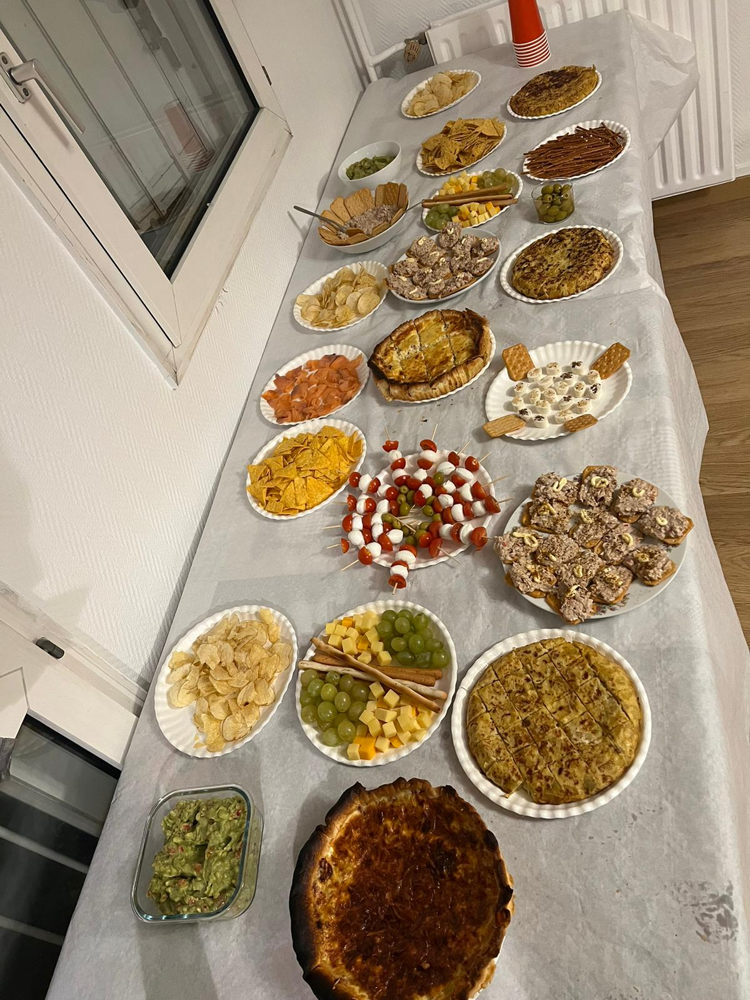
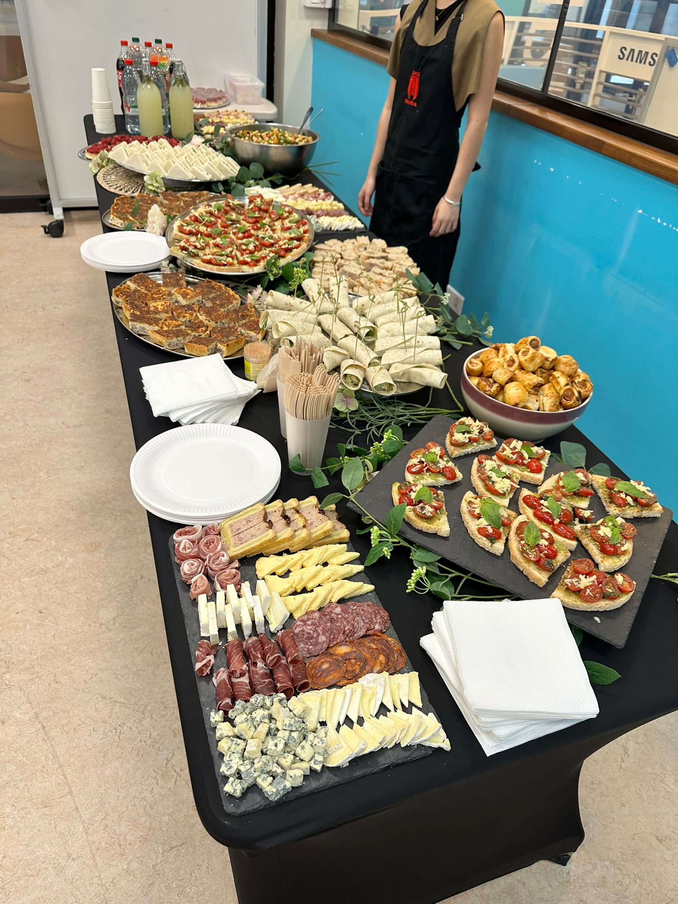

I am Carla Gil Aranda. I was born in Marbella in 2003 and raised in Valencia.I am an outgoing, cheerful, and positive person; although also organized and demanding. I always give 100% of myself not only to achieve my goals but to do them as best as possible. I have a proactive and ambitious attitude, and I am constantly seeking new challenges to face in order to grow both personally and academically.
Among my hobbies, I enjoy traveling, sports, cooking, and spending quality time with my friends and family.
During my school years at the German School of Valencia!, I had several international experiences, such as staying in New York (5 months), Germany (several summers), participating in an exchange program in Dublin (6 months) and in Nîmes (2 weeks).
Currently, I am studying International Business at ESSEC 🇪🇸. For the fourth semester of university, I studied at Providence University in Taiwan 🇹🇼, and for the fifth and sixth semesters, I attended ESSEC in Paris 🇫🇷.
Teaching and languages are one of my biggest passions ❤️🔥. I can fluently speak Spanish, German and Ensglish; I have B2 level in French and I am currently studying Chinese ✏️. I have been teaching different languages to students from very different ages and neads since the age of 14. I also help my students with school tutoring and help them to planify their study time and achieve their goals 🎯 .
My professional profile for the classes is Aula y Recreo
I have always enjoyed cooking and organization. It is really one of the things I like the most. I have realized lately, that I do not only like it, but that I am also pretty good at it!
I am part of the Events Pole at the IMHI Traiteur association at ESSEC where I enjoy organizing caterings for different companies and individual cutomers and cooking for the events.
 